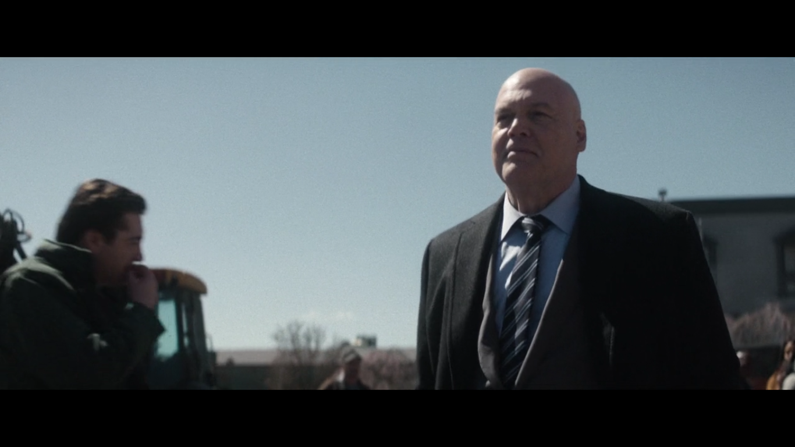
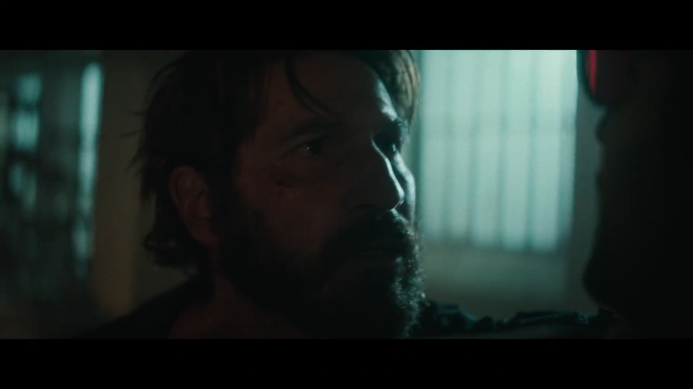
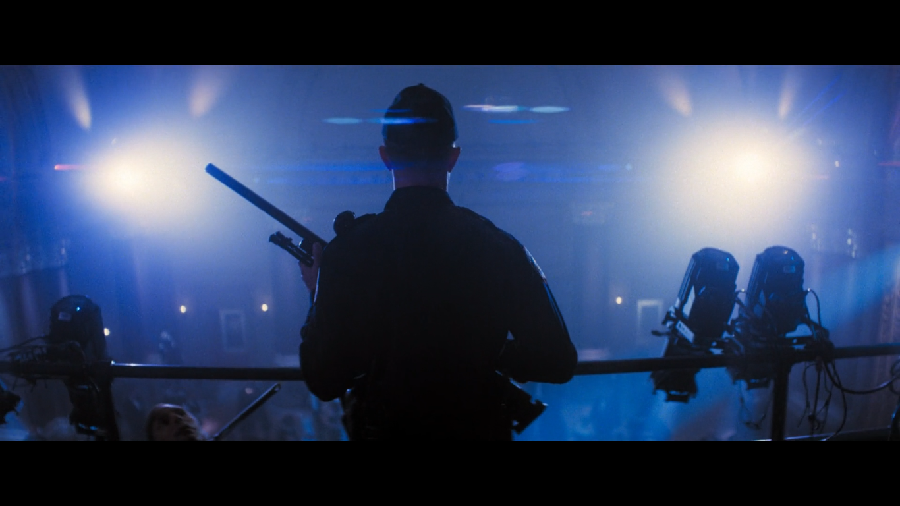
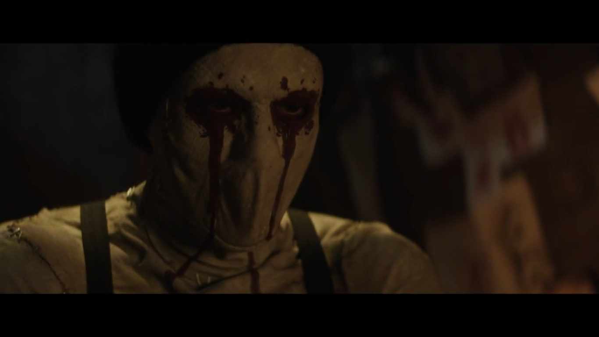

Oke, ini pertama kalinya aku bakal nulis review series secara cukup panjang dan mendetail. Biasanya aku cuma ngobrol santai bareng temen-temen, tapi kali ini aku coba tuangkan lewat tulisan panjang (yapping), disini aku usahain buat bahas series ini sebisa mungkin jadi buat yang belum ngikutin series ini bakal bisa ikutan nyimak tanpa takut kena spoiler. Jadi topik kali ini adalah sebuah series dari marvel yaitu Daredevil, sebuah series dari Marvel Netflix (season 1- season 3), dan sekarang ada season terbarunya lagi setelah vakum selama kurang lebih 7 tahun di Disney Hotstar. Premis di Series ini bercerita tentang seorang pengacara tunanetra bernama Matt Murdock yang tinggal di Hell’s Kitchen, New York. Siang hari dia menjalani profesinya sebagai pengacara, tapi malam harinya dia berubah menjadi penegak keadilan dengan cara main hakim sendiri (Vigilante), yap kalian ga salah denger, seorang tunanetra bisa gelut.
Pengacara tersebut juga menjadi tokoh utama di series ini, dia adalah Matthew Murdock (Matt), dulu dia adalah seorang anak normal tapi dalam satu kejadian dia terlibat dengan suatu insiden dan menjadi seorang tunanetra. Sejak kecil dia biasa merawat bapaknya yang seorang petinju, sekaligus disini dia bisa belajar beberapa hal sederhana dari olahraga ini. Seperti kebanyakan karakter marvel lain, Matt juga mempunyai kekuatan yaitu pendengaran super (ya impas lah ya, ga bisa liat dikasih kelebihan di indra lainnya). Oke disini dia jadi seorang Vigilante (Daredevil) juga bukan tanpa sebab, hal ini karena polisi di wilayah nya tinggal sudah korup (bahkan dalam beberapa kasus justru terdapat polisi bersih yang disingkirkan) sehingga kejahatan jalanan menyebar luas, jadi dengan kelebihan yang udah dibahas sebelumnya dia pelan-pelan berubah jadi Vigilante di malam hari buat ngurangin angka kejahatan jalanan.
Di balik kegiatannya sebagai Vigilante, Matt juga tetap berpegang pada prinsip sebagai pengacara, biar nggak terlalu melanggar hukum. Salah satu prinsipnya yaitu anti bunuh orang dan anti senjata api. Walaupun... batasnya tipis banget sih, mirip sama superhero di platform sebelah yang pegang prinsip serupa. Dalam aksinya, Matt alias Daredevil cuma pakai double stick yang udah dimodifikasi. Selain buat ngelawan penjahat, tongkat ini juga bisa jadi semacam grapple hook, ngebantu dia gerak ke tempat yang lebih tinggi. Tapi prinsip idealis ini juga bikin ceritanya makin kompleks. Ada satu vilain yang dia biarin lolos, eh malah bikin kekacauan yang menjalar ke beberapa season ke depan Wkwkwk. Nah, masuk ke musim ke-4, ceritanya fokus ke Wilson Fisk yang mencalonkan diri jadi walikota New York. Matt yang skeptis berharap ini jadi kesempatan buat ngebenerin kota yang udah mulai “membusuk”. Tapi nggak semua orang nerima keputusan itu. Ada satu sosok misterius yang protes dengan cara unik yaitu bikin mural dan nyoret-nyoret tembok di seluruh kota buat nunjukin ketidaksukaannya.
Vilain yang unik di series ini juga ngasih nilai lebih. Menurutku, salah satu kekuatan utama Season ke-4 ini bukan cuma di adegan aksi nya, tapi gimana penulisannya bikin kita kadang bingung, harus dukung sosok Daredevil atau si vilainnya? Kadang moralitas di series ini abu-abu, dan itu yang bikin nempel di kepala, sehingga dari POV penonton juga memberikan empati ke vilain tersebut. Oke disini aku coba bahas beberapa vilain yang keluar di series Daredevil: Born Again ini, beberapa vilain emang masih terkait dengan season sebelumnya jadi yah bakal aku usahain jelasin se oke mungkin tapi masih tanpa spoiler.
-
Wilson Fisk (Kingpin)

Penampakan Wilson Fisk di Season ke-4 Daredevil Beuh ini mah.. keliatannya hampir setiap fans marvel tau villain ini deh, kehadirannya di beberapa franchise lain kaya Spiderman:Into the Spiderverse udah membawa kesan orang gagah yang juga beringas. Disini Vincent D'Onofrio memainkan karakter Wilson Fisk dengan sangat mendalami. Dengan perawakan tinggi dan gagah serta karakter yang sangat diplomatis yang menjadi rival Daredevil dari awal, pada season ke 4 ini diceritakan dia mencalonkan diri sebagai walikota New York dan memiliki program memberantas Vigilante.
-
Frank Castle (the Punisher)

Tukang Balas Dendam Ya ini mungkin harusnya lebih dimasukin ke anti hero sih dibandingkan vilain, seorang mantan militer yang memiliki PTSD (Pasca Traumatic Stress Disorder) yang banting setir jadi Vigilante buat bales dendam masa lalu nya. Nah yang bedanya disini Frank jelas ngga segan-segan buat menghilangkan nyawa korbannya korbannya. Dia sempet sejalan sama Matt, tapi ada konflik moralitas antara mereka. Oiya karakter ini ada series sendiri, yaitu the Punisher yang di rilis pada 2017-2019 sebanyak 2 season.
-
Benjamin Poindexter

Teori Kemunculan Poindexter Salah satu anggota polisi 'bersih' tapi punya masalah mental, di Season ke-3 karakter ini sempet dimanfaatin sama Kingpin buat singkirin si Daredevil. Yang mengejutkan di awal season 4 karakter ini datang bawa sedikit kejutan buat para penonton. Karakter yang unik juga sih bisa lempar apa aja buat dijadiin senjata, pernah ada suatu scene waktu dia lempar pake peralatan kantor dan ga ada yang meleset. Dan ada sedikit perbedaan desain karakter antara di komik dengan series live
-
'Muse'

Kemunculan Musk di Teaser Series Man.. walaupun masih tersisa 2 episode lagi dan setiap episode susah ditebak jalan cerita nya, tapi kemungkinan ini main vilain dari season ke-4 daredevil sih. Background karakter ini masih belum banyak ke reveal, tapi sejauh ini dia adalah seorang seniman jalanan yang selalu pake topeng. Tapi ada yang aneh dari seniman jalanan satu ini, dia juga seorang serial killer dan dia melukis pake 'cairan merah' yang dipaksa keluar dari tubuh korbannya (you know lah ya). Nah semoga di episode mendatang bakal segera di reveal sih soal karakter 'misterius' satu ini.
Yah dan cukup yapping untuk kali ini, gimana? udah mulai penasaran juga?? Kataku sih gass nonton, oiya soal alur nonton series daredevil ini gini jadi kalian mulai dari Daredevil season 1 -> Daredevil season 2 -> the Defender -> Daredevil season 3 -> Daredevil : Born Again, soal tempat nontonnya bisa kalian tonton di Disney hotstar, yang dari netflix udah abis lisensi soalnya. Oiya lupa ku sampein sebelumnya, series ini rating 18+ karena ada beberapa adegan kekerasan yang diperlihatkan dengan jelas.